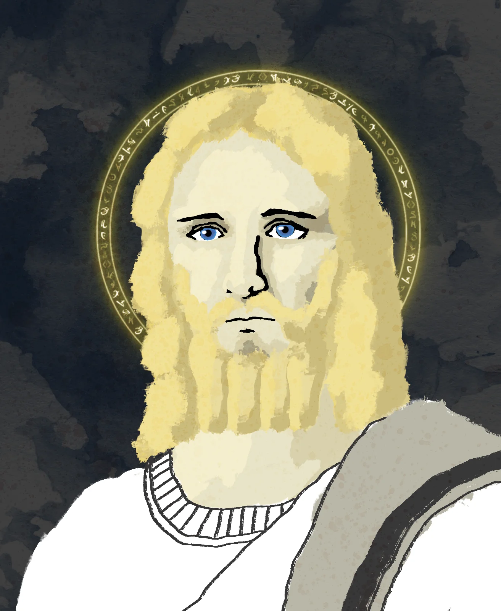
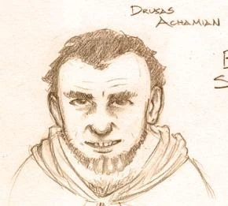
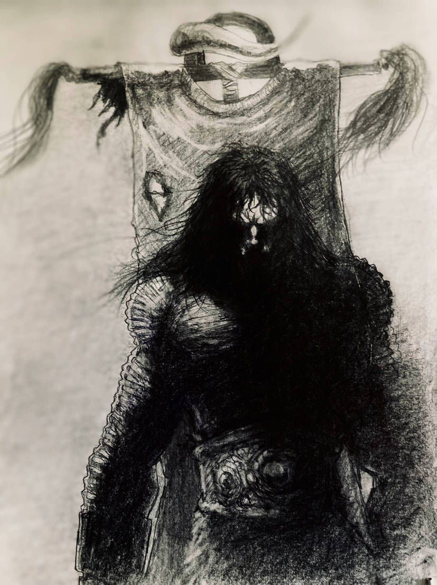
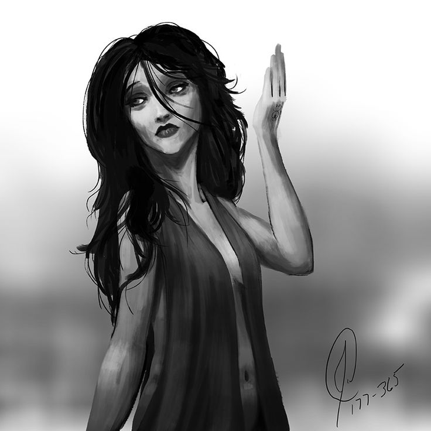
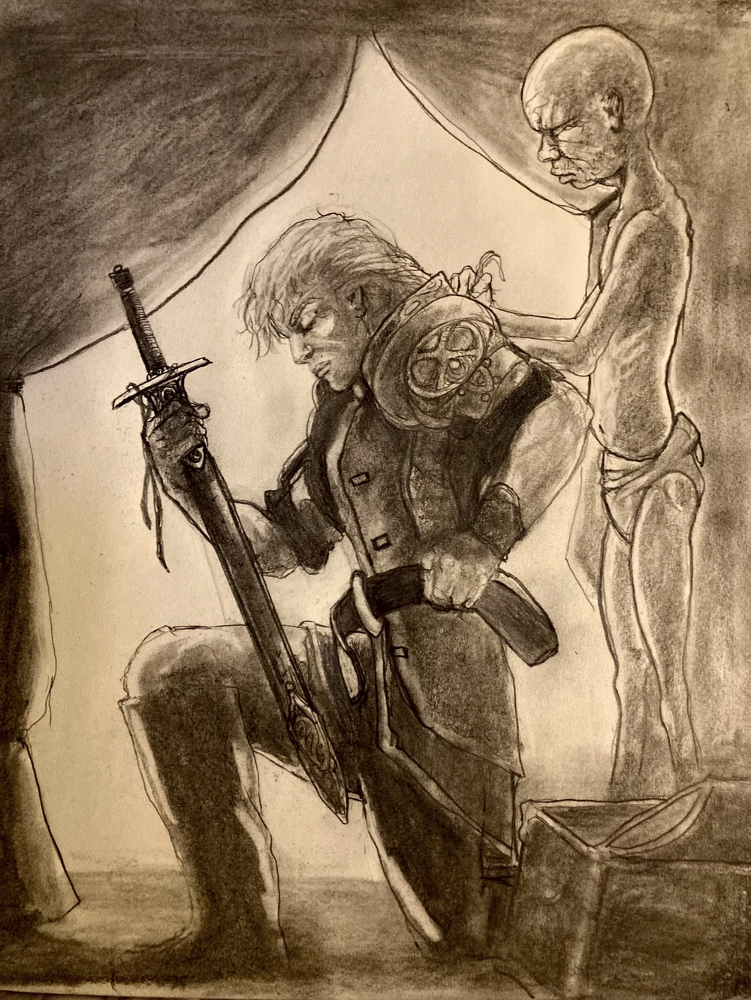
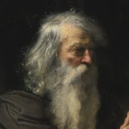
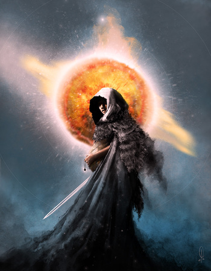

Kluczowe Postacie Drugiej Apokalipsy

Anasûrimbor Kellhus
Rola: Centralna postać, Imperator-Aspekt.
Mnich z tajnego zakonu Dûnyain, wychowany w absolutnej izolacji i hiper-racjonalności. Jego umysł jest narzędziem do perfekcyjnej manipulacji, pozbawionym ludzkich emocji. Jest siłą napędową proroctwa i Świętej Wojny, dążąc do pokonania Konsultu poprzez osiągnięcie statusu quasi-boskiego.

Drusus Achamian
Rola: Czarownik, poszukiwacz Prawdy.
Były nauczyciel Kellhusa i cishaurimski czarownik. Achamian symbolizuje ludzką potrzebę prawdy i historii. Jego podróż polega na odnajdywaniu ukrytych, historycznych faktów o Pierwszej Apokalipsie i próbie zdemaskowania Kellhusa jako manipulatora, a nie zbawiciela.

Cnaiür urs Skiötha
Rola: Wojownik Scylvendi, Wódz Hord.
Ucieleśnienie dzikiej Namiętności i impulsywności, które kontrastują z racjonalnością Dûnyain. Jest jednocześnie towarzyszem i więźniem Kellhusa. Jego wewnętrzny konflikt między miłością a nienawiścią do Kellhusa stanowi jeden z najbardziej intensywnych wątków psychologicznych.

Esmenet
Rola: Prostytutka, Cesarzowa.
Początkowo postać tragiczna, staje się żoną Kellhusa i Cesarzową. W przeciwieństwie do męża, uosabia Miłość, Pasję i emocjonalną ludzkość. Jej podróż to walka o utrzymanie nadziei w obliczu manipulacji.

Proyas
Rola: Generał, Książę, Strażnik Wiary.
Wzór pobożności i lojalności. Symbolizuje ślepe Poczucie Obowiązku i wiarę w proroctwo Kellhusa. Jego lojalność jest testowana do granic możliwości, gdy faktyczna natura Władcy zaczyna się ujawniać.

Moenghus
Rola: Ojciec Kellhusa, Mistrz Manipulacji.
Drugi mnich Dûnyain, który opuścił Terytorium i zaplanował strategiczne posunięcie swojego syna. Uosabia czysty, nieskrępowany niczym Cynizm i planowanie na skalę cywilizacyjną.

Mimara
Rola: Córka Esmenet, Nosicielka Oka Osądzającego.
Postać, której moc polega na widzeniu osądu (deprawacji) każdej duszy. Jest kluczem do prawdy historycznej i moralnym kompasem dla Drususa Achamiana, z którym wyrusza w podróż, aby odkryć przeznaczenie świata. Jej rola jest czysto metafizyczna.